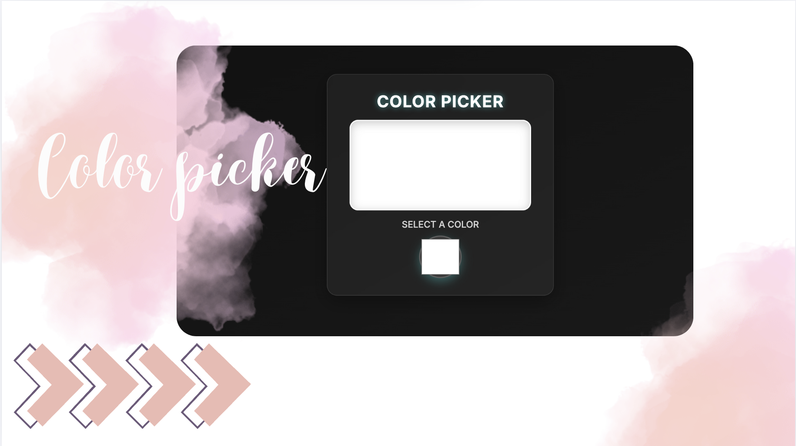

To-Do List
A minimalist, elegant to-do list that helps you stay focused and organized. With smooth interactions and a clean UI, managing tasks feels refreshingly simple.
 View Project →
View Project →
YouTube Clone
A dark-themed YouTube clone built from scratch with HTML & CSS. Responsive layout, hover effects, and a clean design recreate the familiar experience — with a personal twist.
 View Project →
View Project →
Color Picker
A sleek and intuitive color picker tool that lets you explore, choose, and copy hex values effortlessly. Perfect for designers and developers seeking pixel-perfect palettes.
 View Project →